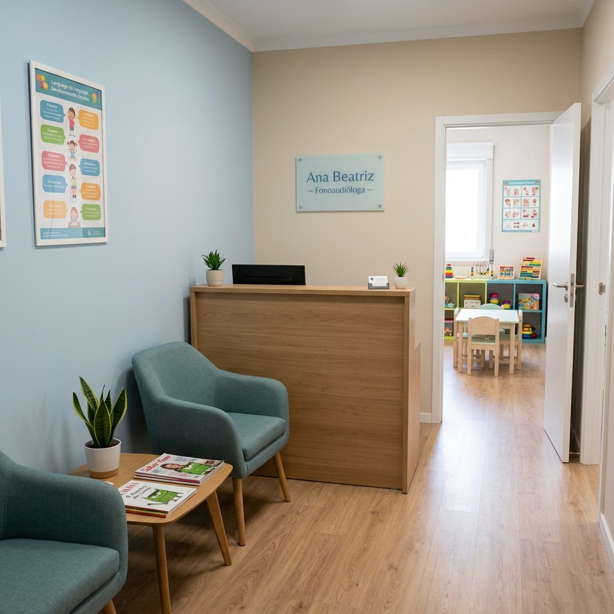
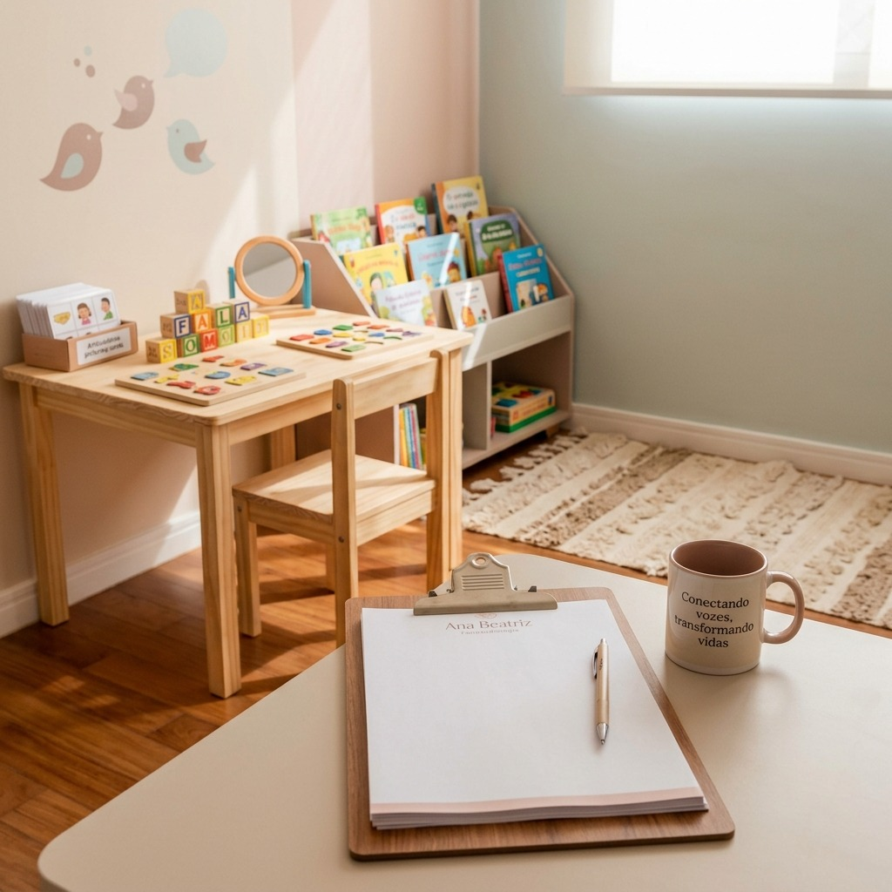

Atendimento humanizado e especializado para crianças e adultos. Recupere a segurança de se comunicar com naturalidade e plenitude.


Fonoaudióloga graduada pela USP, com especialização em Voz pela PUC-SP e Mestrado em Distúrbios da Comunicação. Ao longo de mais de 10 anos de atuação clínica, acompanhei crianças, jovens e adultos na recuperação da saúde comunicativa e bem-estar.
Meu trabalho é guiado pela escuta ativa, ciência e protocolos clínicos individualizados, sempre respeitando o ritmo e as particularidades de cada história de vida.
Oferecemos acompanhamento individualizado e baseado em evidências científicas nas principais áreas da fonoaudiologia clínica.
Avaliação e reabilitação de disfonia, nódulos vocais, rouquidão e higiene vocal preventiva para profissionais da voz e cantores.
Adultos e ProfissionaisEstimulação precoce e tratamento de atrasos de fala, troca de letras, dislexia, autismo (TEA) e distúrbios do neurodesenvolvimento.
CriançasDiagnóstico e reabilitação da disfagia (dificuldade e engasgos ao engolir) em crianças, adultos e pacientes idosos.
Todas as idadesTratamento de respiração oral, mastigação, deglutição atípica, bruxismo e adequação da musculatura facial e labial.
Crianças e AdultosReabilitação auditiva, treinamento de processamento auditivo central e adaptação personalizada de aparelhos auditivos.
Adultos e IdososReabilitação cognitiva e da linguagem para afasias e disartrias decorrentes de AVC, traumatismos ou doenças neurológicas.
NeurológicoHistórias reais de superação, confiança restabelecida e conexões transformadas através da comunicação.
"A Dra. Ana Beatriz transformou a vida do meu filho. Em apenas 4 meses de terapia, ele passou a se comunicar com muita clareza na escola e em casa. Atendimento acolhedor, humano e impecável."
"Após sofrer um AVC, achei que jamais voltaria a me expressar com segurança. A Dra. Ana foi primordial em cada passo da minha recuperação. Sua sensibilidade e técnica fazem toda a diferença."
"Como professora, minha voz é meu instrumento de trabalho diário. O tratamento de disfonia salvou minha carreira! Aprendi técnicas essenciais e não sofro mais com crises de rouquidão."
Entre em contato e dê o primeiro passo para transformar sua comunicação, voz e qualidade de vida.